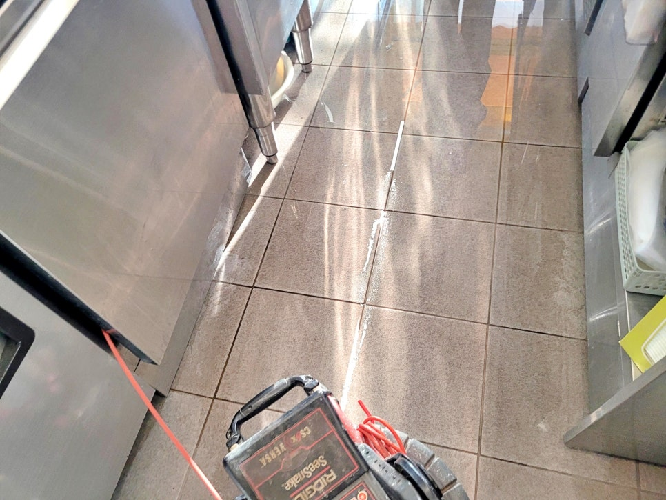
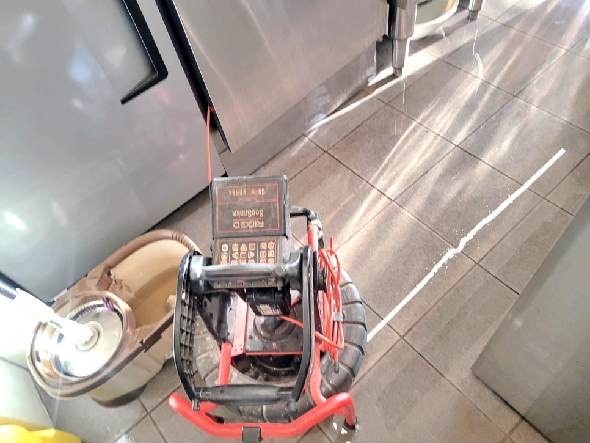
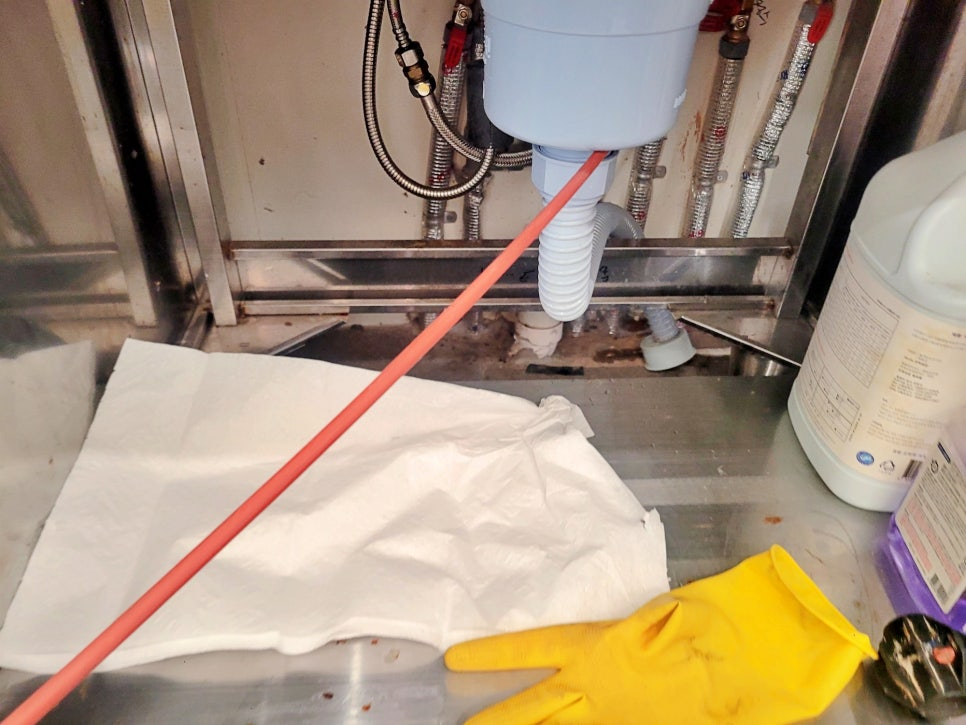
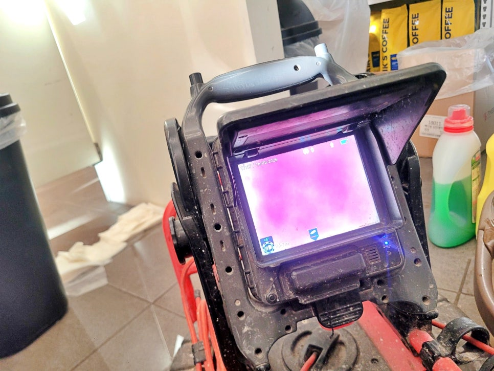
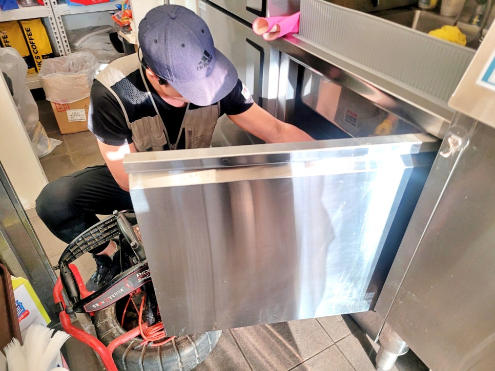
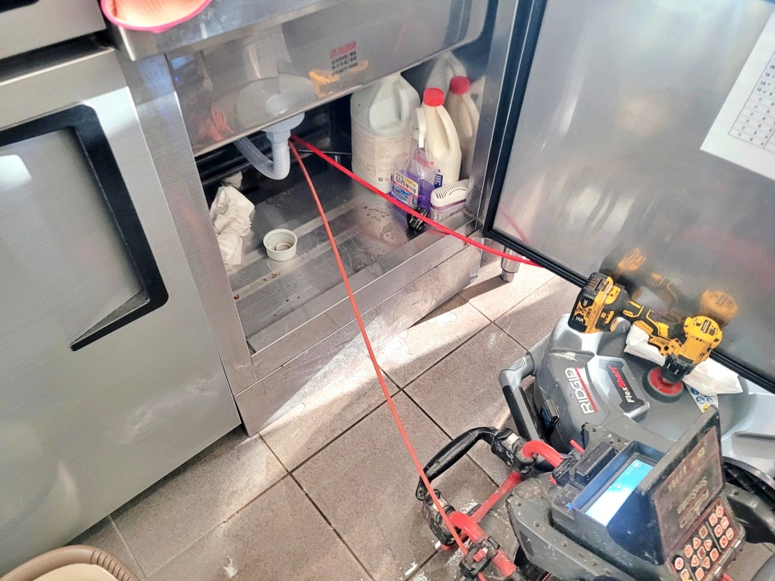

🏠 화성 동탄 커피숍 싱크대막힘, 제빙기 배관역류 해결 후기
화성 싱크대막힘 전문 시공 후기

📋 작업 개요
- 위치: 화성
- 서비스 유형: 싱크대막힘, 하수구막힘, 배관막힘, 역류해결, 배관청소, 고압세척
- 작업 일시: 2026. 5. 28. 9:54
- 업체명: 하수구수사대 (010-5615-2118)
🔍 문제 상황
화성 동탄 커피숍 싱크대막힘 역류,
제빙기 배관역류 원인 해결 후기
안녕하세요.
화성 동탄 하수구역류 배관청소 전문
하수구수사대입니다.
이번 현장은 동탄에 있는 커피숍 주방에서
바닥 쪽으로 물이 역류한다는 연락을 받고
출동한 사례입니다.
화성 동탄 싱크대막힘 역류 현장
화성 동탄 커피숍 싱크대막힘 현장에
도착해 보니 주방 바닥 타일 위로
물이 흘러나온 흔적이 남아 있었고,
제빙기에서 빠져야 할 물도 제대로 내려가지
못하는 상태였는데요.
커피숍은 싱크대, 제빙기, 커피머신,
세척 공간에서 물 사용량이 많기 때문에
배관이 막히면 금방 바닥 역류로 이어집니다.
커피숍 싱크대막힘 원인을 먼저 살펴봤습니다
먼저 싱크대 하부장 안쪽을 열어

🔎 원인 분석
💡 전문가 진단: 화성 동탄 커피숍 싱크대막힘 역류,제빙기 배관역류 원인 해결 후기
배수 상태를 살펴봤습니다.
겉으로 보기에는 큰 파손이 없어 보여도
안쪽에 찌꺼기와 기름 성분이 쌓이면
제빙기 물까지 밀려 올라올 수 있습니다.
내시경 카메라로 배관 상태 점검 중
이런 현장은 무작정 장비를 넣기보다
내시경 카메라로 배관 안쪽 상태를
먼저 보는 게 중요합니다.
막힌 위치와 배관 상태를 알아야 불필요한
작업을 줄일 수 있기 때문인데요.
화성 동탄 커피숍 하수구역류 현장에
내시경 장비를 투입해 내부를 살펴보니
배관 안쪽에 많은 이물질이 많이 쌓여
정체가 심한 상태였습니다.
커피숍 주방 특성상
물만 내려가는 것이 아니라 음료 잔여물과
세척수, 작은 이물질이 함께 들어가며
시간이 지나면 배관 안쪽에
막힘이 생기기 쉽습니다.

🔧 작업 과정
배관청소 진행 후 배수 상태를 다시 점검했습니다
동탄 커피숍 싱크대막힘 배관 청소 작업
동탄 커피숍 싱크대막힘이 발생한 구간을
중심으로 배관청소를 진행했는데요.
장비를 넣고 안쪽에 걸려 있던 찌꺼기와
굳은 오염물을 제거하며 배수가 되도록
반복 작업했습니다.
작업 중에는 내시경 화면을 보면서
배관 내부 상태를 계속 살펴봤습니다.
눈에 보이는 바닥 물만 닦는다고
끝나는 문제가 아니기 때문에,
안쪽 막힘이 해결됐는지가 가장 중요한
부분이죠.
화성 동탄 제빙기 배관역류 청소 후에는
다시 물을 흘려보내며
제빙기 배수와 싱크대 배수가 정상적으로
내려가는지 점검했습니다.
배관 청소 후 배수 테스트 진행 중
역류가 멈추고 물 빠짐이 안정적으로
돌아온 것을 확인한 뒤
주변 바닥 청소까지 마무리했습니다.
동탄 싱크대막힘 현장 후기를 마무리하며
이번 화성 동탄 싱크대막힘 현장은
커피숍 주방 배관이 막히면서
제빙기 물과 싱크대 배수가 함께 영향을
받은 사례였는데요.
영업장 주방은 배수가 한 번 막히면
위생 문제와 영업 불편이 바로 생깁니다.
바닥으로 물이 올라오기 시작했다면
하수구수사대가 신속하게 출동해


✅ 작업 완료
내시경 카메라 점검과 배관청소로
정확하고 안전하게 해결해드리겠습니다.
이상으로
화성 동탄 커피숍 싱크대막힘,
제빙기 배관역류 해결 후기를
마치겠습니다.
감사합니다.
#화성동탄싱크대막힘 #화성동탄하수구역류 #동탄하수구역류 #커피숍싱크대막힘 #동탄싱크대막힘 #제빙기배수역류 #커피숍배관청소 #하수구수사대 #동탄배관청소업체




⚠️ 주방 싱크대 배관 막힘 예방 수칙
- ✅ 기름기가 묻은 식기나 프라이팬은 설거지 전 키친타올로 반드시 기름때를 닦아내세요.
- ✅ 주기적으로 싱크대 개수대에 뜨거운 물을 가득 받아 한 번에 내려 배관 내부 기름을 씻어내세요.
- ✅ 배수구 거름망을 미세한 필터로 사용하시고 음식물 찌꺼기가 틈으로 새어 들지 않게 관리하세요.
- ✅ 베이킹소다와 식초를 뜨거운 물과 함께 일주일에 한 번씩 부어주면 배관 살균과 막힘 예방에 좋습니다.
💡 핵심 정리
- 확실한 장비 작업(내시경 점검 및 샤프트 스케일링)으로 원인을 뿌리 뽑습니다.
- 작업 후 1년 이내에 동일한 부위 재발 시 100% 무상 A/S 서비스를 보장합니다.
- 서울 · 경기 · 인천 전 지역에 24시간 언제든 긴급 출동할 수 있도록 항시 대기 중입니다.
❓ 자주 묻는 질문 (FAQ)
🚨 화성 싱크대막힘 문제로 고민이신가요?
정확한 원인 진단과 확실한 시공으로 재발 없는 해결을 약속드립니다.
24시간 긴급 출동 | 서울 · 경기 · 인천 전지역 | 1년 내 재발 시 무상 A/S